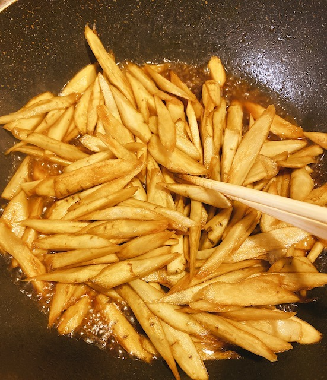

2020/0422Wedくっく
普段は時間がなくて
ゆっくり作れない時もあるけど
今はたっぷり時間があるので
いろんな料理をして過ごしています!
この機会にレパートリー増やすぞ〜

パーカーラクチン

お姉ちゃんが撮ってくれました☺︎
プティくんは、甘えんぼさんです
カワイイ〜
ちなみに今日は
きんぴらごぼう
ネギとえのきのつくねバーグ
鶏ささみの香味ダレかけ
豆腐とわかめの赤だし
を作りました!
家族が美味しいって言ってくれて
嬉しかったです☺︎


味付けうまくできて良かった!

すっぴんだと余計に目の下の
赤みが目立ちますなあ
アイシャドウをよく聞かれますが
元々涙袋の粘膜がピンクなんです...
アレルギー体質だからかな？
質問答えようと思うので
質問ください☺︎
ではでは
2020/04/22 20:00
コメント(1092)
更新ありがとうございます！いつもブログに癒されています(^^)みおなちゃんに影響されて自粛期間中は自分磨きをがんばっています( ⌯᷄௰⌯᷅ )もしよろしければみおなちゃんの最近のお気に入りコスメを教えて頂きたいです((o(｡>ω<｡)o))
ザンビ今頃全話見たんですけど
演技力すごすぎです！
今後どんな映画や、ドラマに出たいですか？
演技力すごすぎです！
今後どんな映画や、ドラマに出たいですか？
今使ってる香水はなんですか？
堀ちゃん更新ありがとう！！
いつもお疲れ様です
☆質問☆
1.堀ちゃんの好きな世界遺産は？
2.ファンの子の顔は覚える方？
3.握手会で話してほしいことは？
いつもお疲れ様です
☆質問☆
1.堀ちゃんの好きな世界遺産は？
2.ファンの子の顔は覚える方？
3.握手会で話してほしいことは？
未央奈ちゃんブログ更新ありがとう( ´･･)
質問です！
Q小顔マッサージ何やってますか？
Qダンス初心者が1番覚えやすい乃木坂の曲は何ですか？
Qsingout！踊る上で大切なことはなんですか？
この休み中にダンス覚えたいんです¨̮)︎︎♡
よろしくお願いします!!
質問です！
Q小顔マッサージ何やってますか？
Qダンス初心者が1番覚えやすい乃木坂の曲は何ですか？
Qsingout！踊る上で大切なことはなんですか？
この休み中にダンス覚えたいんです¨̮)︎︎♡
よろしくお願いします!!
毎日自炊えらい〜！！
和食が得意なのかな？
私も自炊がんばろう⍤⃝
質問！
今年の春夏着たい服、あるいは購入した服は？☺︎
なかなか外出できない今だけど、
新しい季節がくると洋服一新したくなる(笑)
通販で永遠にウィンドウショッピングできるよね(笑)
和食が得意なのかな？
私も自炊がんばろう⍤⃝
質問！
今年の春夏着たい服、あるいは購入した服は？☺︎
なかなか外出できない今だけど、
新しい季節がくると洋服一新したくなる(笑)
通販で永遠にウィンドウショッピングできるよね(笑)
ブログ更新ありがとう！！！！
とにかく課題のやる気が起きないんですけど未央奈ならどうする？( > < )
とにかく課題のやる気が起きないんですけど未央奈ならどうする？( > < )
ブログ更新ありがとうございます！
毎度多くて嬉しい限りです。
最近ずっとバスラDVD観てます！夏のジコチュープロデュース結構気に入ってます！
岐阜に旅行行った時、食べ歩きで飛騨牛の肉寿司食べたんですけど、飛騨牛美味しいお店ってありますか？
毎度多くて嬉しい限りです。
最近ずっとバスラDVD観てます！夏のジコチュープロデュース結構気に入ってます！
岐阜に旅行行った時、食べ歩きで飛騨牛の肉寿司食べたんですけど、飛騨牛美味しいお店ってありますか？
未央奈さんいつも通りの可愛さでとても好きです！お姉さんと仲良しなんて理想だなぁ
今高2で勉強に専念しています。大学生になってから、必ずライブ、握手会に行くので、乃木坂のエースとして長く残ってください！待っててください！ずっと推します！
質問です！
未央奈さんはホラー映画好きとお伺いしましたが、おすすめのホラー映画はなんですか？？この休み期間に見ようと思います！
今高2で勉強に専念しています。大学生になってから、必ずライブ、握手会に行くので、乃木坂のエースとして長く残ってください！待っててください！ずっと推します！
質問です！
未央奈さんはホラー映画好きとお伺いしましたが、おすすめのホラー映画はなんですか？？この休み期間に見ようと思います！
こまめな更新ありがとう！！学校の楽しみは何でしたか？
今の状況が落ち着いたら絶対握手会行く！！
いつもブログの更新楽しみにしてます
質問なんですが今も普通に会社に出勤してる状況で
毎日ずっとマスクをしているので肌荒れが
酷いんですけど、何か対策があれば教えて欲しいです
私も堀ちゃん見習ってお休みの日は
手の込んだお料理作ってみたいと思います！
質問なんですが今も普通に会社に出勤してる状況で
毎日ずっとマスクをしているので肌荒れが
酷いんですけど、何か対策があれば教えて欲しいです
私も堀ちゃん見習ってお休みの日は
手の込んだお料理作ってみたいと思います！
サッカーしてる人どう思いますか？
島のフルーツなに？？？
ブログ更新ありがとう！
プティくんかわいいね！パーカー未央奈もかわいい！
プティくんかわいいね！パーカー未央奈もかわいい！
堀ちゃんがよく聞く乃木坂の曲ってなんですか？
めっちゃ料理うまそうじゃん！！
未央奈は最強だね！
Q Fortniteってゲーム知ってる？ (switchでもできるから是非やってみてほしい)
体調に気をつけてね！
未央奈は最強だね！
Q Fortniteってゲーム知ってる？ (switchでもできるから是非やってみてほしい)
体調に気をつけてね！
目標としていることがあるのですが、それに対する努力をなかなか継続してできません、、
そういうときどうしたらいいと思いますか？？
そういうときどうしたらいいと思いますか？？
好きな女性、男性のファッションは何ですかー？
おすすめの料理レシピは、何ですか？
ブログに、載っている料理おいしいそう。
パーカーに合わせられるファッションコーデ教えてください。
今後も堀未央奈 推しとして応援します。
乃木坂工事中でも目立ってきてうれしい。
ブログ更新ありがとー！
ブログに、載っている料理おいしいそう。
パーカーに合わせられるファッションコーデ教えてください。
今後も堀未央奈 推しとして応援します。
乃木坂工事中でも目立ってきてうれしい。
ブログ更新ありがとー！
未央奈ブログ更新ありがとう！更新頻度高くて毎度嬉しいです！！
お料理上手だなあ〜〜レシピとか知りたいなって思います！
あとパーカー未央奈可愛すぎです！飾らない未央奈も可愛い！
この前未央奈がモデルをしているGRLのリボンワンピースを買いました！届くのが楽しみです！！
質問させていただきます！
未央奈が握手会で着てほしい服やしてほしい髪型はなんですか？
また未央奈が好きな女の子の服装や髪型はなんですか？未央奈に会うときに着ていきたいです！
プティくんも未央奈もお体に気をつけてください！
お料理上手だなあ〜〜レシピとか知りたいなって思います！
あとパーカー未央奈可愛すぎです！飾らない未央奈も可愛い！
この前未央奈がモデルをしているGRLのリボンワンピースを買いました！届くのが楽しみです！！
質問させていただきます！
未央奈が握手会で着てほしい服やしてほしい髪型はなんですか？
また未央奈が好きな女の子の服装や髪型はなんですか？未央奈に会うときに着ていきたいです！
プティくんも未央奈もお体に気をつけてください！
未央奈ちゃん可愛いね‼
♪未央奈ちゃんへの質問♪
◦最近食べた、美味しいものはなあに？
◦乃木坂の曲の中で、未央奈ちゃんが好きな曲は？
◦どうぶつの森は今どんな感じになってる？
質問はこんな感じかな。
体に気をつけてね！
♪未央奈ちゃんへの質問♪
◦最近食べた、美味しいものはなあに？
◦乃木坂の曲の中で、未央奈ちゃんが好きな曲は？
◦どうぶつの森は今どんな感じになってる？
質問はこんな感じかな。
体に気をつけてね！
高校生になるんですけど、まだメイクをしたことがなくて…
堀ちゃんは乃木坂入る前からメイクしてましたか？
堀ちゃんは乃木坂入る前からメイクしてましたか？
こんばんは！
毎回みおなちゃんの写真見て元気貰ってます！
こんな状況ですが、今だからこそやってみたいことやりたいことってなんですか？？
毎回みおなちゃんの写真見て元気貰ってます！
こんな状況ですが、今だからこそやってみたいことやりたいことってなんですか？？
質問！
ロックとかヴィジュアル系バンドとかって聴いてたりする？
ロックとかヴィジュアル系バンドとかって聴いてたりする？
みおなちゃんブログありがとう！
質問です！高校生におすすめのコスメ教えてください！
質問です！高校生におすすめのコスメ教えてください！
島のフルーツ何ですか？
ふーん、料理うまいじゃん
あつまれどうぶつの森で海の化石ともいわれるシーラカンスを釣ったことがありますか？
高校生になるんですけど、友達を作る方法教えて欲しいです!!
未央奈ちゃんとはやく握手したいです！
質問⤵︎ ︎
私、看護師になるのが将来の夢なんです。今、コロナで大変です。頑張ってコロナの方を助けます！
質問⤵︎ ︎
私、看護師になるのが将来の夢なんです。今、コロナで大変です。頑張ってコロナの方を助けます！
みおなの最近のマイブーム教えてほしいなぁ
未央奈さんに質問です！
オススメの勉強方はありますか？？
I seeの視聴回数が増えてますが、率直な先輩からの感想を聞きたいです！！
いつも応援してます！！
オススメの勉強方はありますか？？
I seeの視聴回数が増えてますが、率直な先輩からの感想を聞きたいです！！
いつも応援してます！！
堀さん質問します。
堀さん、もしも本当にあった怖い話に出れるとしたらどんな設定で何の役で出たいですか？
堀さんは何人きょうだいですか？
堀さん僕黒の服が凄く好きで夏でも涼しい黒の服をよく着るんですけど堀さんは黒の服はお好きですか？
堀さん好きなポケモンは何ですか？僕はサザンドラと色違いの銀色のメタグロスと黒のレックウザです。
以上です。
堀さん最近新型コロナがまだ流行ってるので十分にお気をつけて下さい。堀さんや乃木坂46メンバー皆さんのご安全を心から願っています☺️新型コロナが落ち着いて握手会が再開したらまたインテックス大阪で堀さんや乃木坂46さんに会えるのを凄く楽しみにしています☺️
それでは失礼いたします。
堀さん、もしも本当にあった怖い話に出れるとしたらどんな設定で何の役で出たいですか？
堀さんは何人きょうだいですか？
堀さん僕黒の服が凄く好きで夏でも涼しい黒の服をよく着るんですけど堀さんは黒の服はお好きですか？
堀さん好きなポケモンは何ですか？僕はサザンドラと色違いの銀色のメタグロスと黒のレックウザです。
以上です。
堀さん最近新型コロナがまだ流行ってるので十分にお気をつけて下さい。堀さんや乃木坂46メンバー皆さんのご安全を心から願っています☺️新型コロナが落ち着いて握手会が再開したらまたインテックス大阪で堀さんや乃木坂46さんに会えるのを凄く楽しみにしています☺️
それでは失礼いたします。
未央菜たん、こんばんわわわʕ•ᴥ•ʔ
わんちゃん（プティくん）かわいいですね〜❤︎
私もわんちゃん飼ってますよ♬
名前はりぼんちゃんです。女の子ですよっ！
パーカー かわいいですね！
私も今日パーカー ファッションです☺︎
ラクチンで、おしゃれで万能！
えんじ色のパーカー でお母さんからいただいました☀︎
未央菜たんが質問返ししてくれるなんて…(*´꒳`*)
少し前に質問書いたから、返してくれたら嬉しいなぁ✿('▽' ✿）
ﾄﾞｷﾄﾞｷ…
未央菜たんの自撮り好きなの❤︎
ぱっちりおめめ、ずーっと見てられる気がする！
涙袋ピンクなところも可愛いね〜❤︎
やっぱり好き！
そしてお料理得意なのかな？？
いつも美味しそうな物作ってるね！
この前のじゃがいものお料理美味しそうだった！
私も作ってみたいなぁ。
プティくんとの写真の枠？背景？？が素敵！
いい雰囲気出してますね！
もう既に読んでるんだけど（勝手に…）未央菜たんって読んでもいいかなー。
個人的に少し親近感がある気がして気に入っちゃって。。
長くなってしまいすみません。
質問返しも楽しみに待ちたいと思います✿('-' ✿）
それでは、またねです☺︎
わんちゃん（プティくん）かわいいですね〜❤︎
私もわんちゃん飼ってますよ♬
名前はりぼんちゃんです。女の子ですよっ！
パーカー かわいいですね！
私も今日パーカー ファッションです☺︎
ラクチンで、おしゃれで万能！
えんじ色のパーカー でお母さんからいただいました☀︎
未央菜たんが質問返ししてくれるなんて…(*´꒳`*)
少し前に質問書いたから、返してくれたら嬉しいなぁ✿('▽' ✿）
ﾄﾞｷﾄﾞｷ…
未央菜たんの自撮り好きなの❤︎
ぱっちりおめめ、ずーっと見てられる気がする！
涙袋ピンクなところも可愛いね〜❤︎
やっぱり好き！
そしてお料理得意なのかな？？
いつも美味しそうな物作ってるね！
この前のじゃがいものお料理美味しそうだった！
私も作ってみたいなぁ。
プティくんとの写真の枠？背景？？が素敵！
いい雰囲気出してますね！
もう既に読んでるんだけど（勝手に…）未央菜たんって読んでもいいかなー。
個人的に少し親近感がある気がして気に入っちゃって。。
長くなってしまいすみません。
質問返しも楽しみに待ちたいと思います✿('-' ✿）
それでは、またねです☺︎
ブログ更新ありがとう♡３つ質問です！
ひとつめ、GRLさんで未央奈が着てるものの中から未央奈のお気に入りはどれですか(o^^o)？どれもとっても可愛いくて買うのまようから教えてほしい！！！
ふたつめ、骨格診断は受けたことがありますか？受けたことがあればどの骨格だったか知りたいです！服選びの参考にします◎
みっつめ、未央奈のパーソナルカラーはサマーですか？見た感じサマーかなと思うんだけど、、、服を選んだりメイク選ぶときに気にしてるかどうかも教えてください♪
長々とごめんね！ぜひ答えてほしいです
ひとつめ、GRLさんで未央奈が着てるものの中から未央奈のお気に入りはどれですか(o^^o)？どれもとっても可愛いくて買うのまようから教えてほしい！！！
ふたつめ、骨格診断は受けたことがありますか？受けたことがあればどの骨格だったか知りたいです！服選びの参考にします◎
みっつめ、未央奈のパーソナルカラーはサマーですか？見た感じサマーかなと思うんだけど、、、服を選んだりメイク選ぶときに気にしてるかどうかも教えてください♪
長々とごめんね！ぜひ答えてほしいです
異性の好きな服装は！？
こんばんは！元気そうでなによりです！
沢山ブログ更新ありがとうございます。
«質問»
○ドウェイン・ジョンソンさん好きですか？？
○野球部のイメージは？？
○心が折れそうになった時は何をしてますか？？
○今ハマってることとかありますか？？
答えてくれると嬉しいです
毎日、未央奈ちゃんに元気もらってます！
沢山ブログ更新ありがとうございます。
«質問»
○ドウェイン・ジョンソンさん好きですか？？
○野球部のイメージは？？
○心が折れそうになった時は何をしてますか？？
○今ハマってることとかありますか？？
答えてくれると嬉しいです
毎日、未央奈ちゃんに元気もらってます！
ブログ更新ありがとうございます。
料理美味しそうですね
質問です。
乃木どこ見返してて思ったのですが
今でも紅茶のティーパック
目に当てて寝ていますか？
料理美味しそうですね
質問です。
乃木どこ見返してて思ったのですが
今でも紅茶のティーパック
目に当てて寝ていますか？
ブログ更新ありがとうございます。
プティくん可愛らしいですね。
質問です！
もしお外に出られるようになったら何をしたいですか？
プティくん可愛らしいですね。
質問です！
もしお外に出られるようになったら何をしたいですか？
ブログ更新ありがとう！
可愛い写真ありがとう！
写真集待てないよ。笑
楽しみです！！
質問
邦ロックってききますか？聞いてたら曲もお願いします！
写真集待てませんどーすればいいですか？
岐阜といったら？
体調には気をつけてください！
これからも応援してます！
モバイルメール取り始めたので毎日が楽しみです！
可愛い写真ありがとう！
写真集待てないよ。笑
楽しみです！！
質問
邦ロックってききますか？聞いてたら曲もお願いします！
写真集待てませんどーすればいいですか？
岐阜といったら？
体調には気をつけてください！
これからも応援してます！
モバイルメール取り始めたので毎日が楽しみです！
ブログ更新、ありがとう！
こんな世の中だけど、ブログや755を更新してくれるからほんと嬉しいし、励みになります！
自分は自分ができる仕事をがんばろうと思えます！
未央奈ちゃんがアイドルを好きなようにわたしも今の仕事が好きですし、誇りです！
未央奈ちゃんのがんばる活力？はどこからきてますか？？
こんな世の中だけど、ブログや755を更新してくれるからほんと嬉しいし、励みになります！
自分は自分ができる仕事をがんばろうと思えます！
未央奈ちゃんがアイドルを好きなようにわたしも今の仕事が好きですし、誇りです！
未央奈ちゃんのがんばる活力？はどこからきてますか？？
鈴堀推しです。お言葉に甘えてご質問を。
お二人の心温まる未公開エピソードとかありましたら、ご披露頂けらすごく嬉しいです。
未央奈さんが、ものすごく沢山発信してくださるのは、私含めファン皆さんの支えになっていると思います。本当にありがとうございます。
どうも長期戦の様相です。御身も大切にされますように。ではは
お二人の心温まる未公開エピソードとかありましたら、ご披露頂けらすごく嬉しいです。
未央奈さんが、ものすごく沢山発信してくださるのは、私含めファン皆さんの支えになっていると思います。本当にありがとうございます。
どうも長期戦の様相です。御身も大切にされますように。ではは
質問ではありませんが、ファンになってからずっと夢だったモバメをついに取り始めました！今日早速メールが来て嬉しかったです。
未央奈ちゃん！質問です^._.^♡♡
未央奈ちゃんは髪を巻く時や前髪を巻く時のコツは何かありますか？また、何のヘアアイロンを使ってますか？
今日も世界一だいすきだったよ〜〜はやく未央奈ちゃんに会いたいです！
おうち時間で未央奈ちゃんの動画作ったんだ〜〜755で載せました！
未央奈ちゃんは髪を巻く時や前髪を巻く時のコツは何かありますか？また、何のヘアアイロンを使ってますか？
今日も世界一だいすきだったよ〜〜はやく未央奈ちゃんに会いたいです！
おうち時間で未央奈ちゃんの動画作ったんだ〜〜755で載せました！
あつ森の島の名前決めるときすぐ決まった？
ブログ更新ありがとう！！
来年医学部受験あって超不安だから応援してほしい！！
来年医学部受験あって超不安だから応援してほしい！！
くっくって笑ってるんかと思ったら料理やからくっくって事ね！
みおちゃんが作る料理全部美味しそうや〜♡♡
いつか食べてみたいよ(>_<)
私全く料理しないんだけどみおちゃんが作ったやつ真似して作って見ようかな！！女子力0だから少しでもみおちゃんに近づかないとだ(>_<)
あ、でもね、体型やばいって思ってみおちゃんがよく家で踊るって言ってたから真似してYouTube見ながらダンス始めたの！！
どれも難しいね〜(>_<)
乃木坂で踊りやすい曲ってあるんかな？？
あったら教えてほしい︎︎︎︎☺︎
みおちゃんが作る料理全部美味しそうや〜♡♡
いつか食べてみたいよ(>_<)
私全く料理しないんだけどみおちゃんが作ったやつ真似して作って見ようかな！！女子力0だから少しでもみおちゃんに近づかないとだ(>_<)
あ、でもね、体型やばいって思ってみおちゃんがよく家で踊るって言ってたから真似してYouTube見ながらダンス始めたの！！
どれも難しいね〜(>_<)
乃木坂で踊りやすい曲ってあるんかな？？
あったら教えてほしい︎︎︎︎☺︎
みなみおなのエピソードおしえて❤︎


きんぴらごぼうおいしそう！
いいなあ！！
実は今日誕生日で、みおなちゃんがブログ更新してくれるのがとても嬉しいです。
本年度もみおなちゃんのことだいすきでいます ありがとう